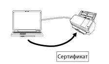

Обзор
Network Setup Tool for fi Series — это приложение для подключения сканера fi Series к сети, чтобы сделать сканер доступным.
Network Setup Tool for fi Series поставляется со следующими инструментами.
Поддерживаемые модели сканера отличаются в зависимости от инструмента, который используется для модели. Заранее убедитесь, что имя используемой модели сканера, является именем моделей сканеров, которые поддерживаются инструментом. Для получения информации о моделях сканера, которые поддерживаются каждым инструментом, смотрите Поддерживаемые модели сканера.
Инструмент выбора сканера
Этот инструмент предназначен для выбора сканера, который вы хотите использовать на компьютере.
Вы можете выбрать один сканер среди всех сканеров, подключенных к сети.
При выборе fi-8950, fi-8930, fi-8820, fi-8040, fi-8190, fi-8290, fi-8170, fi-8270, fi-8150 или fi-8250 можно выполнить следующие действия:
Запустите сетевые Настройки сети fi Series (в веб-браузере) из окна [Инструмент выбора сканера] для конфигурации настроек сканера
Запустите Software Operation Panel с компьютера для конфигурации настроек сканера
Для получения сведений о Настройки сети fi Series (в веб-браузере) и Software Operation Panel смотрите руководство пользователя сканера.

Инструмент настройки IP-адреса
Это инструмент для настройки IP-адреса, имени сканера, информации о безопасности и другой информации о сети.
Инструмент регистрации сертификатов
Это инструмент для регистрации сертификата на сканере для подключения сканера к сети, которая требует сертификат, по Wi-Fi.
После регистрации сертификата на сканере конфигурируйте настройки Wi-Fi на сенсорном экране сканера.
Можно зарегистрировать следующие сертификаты:
Сертификат клиента: Формат файла PKCS#12 (*.p12, *.pfx)
Сертификат CA: Файл сертификата CA (*.cer, *.crt, *.der, *.pem)

Button Event Manager
Это инструмент для задания приложения сканирования изображений, которое будет запускаться при нажатии кнопки на сканере.
Требуется Инструмент выбора сканера для задания сканера, подключенного к сети, для его использования на компьютере.